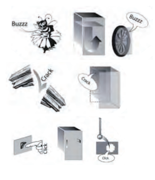

Ръководство за &; употреба и поддръжка
Шумовете от уреда са нормални, тъй като той разполага с няколко вентилатора и мотора за регулиране на
функционирането, които се включват и изключват автоматично.
Ръководство за &; употреба и поддръжка
| Вид звуков сигнал | Сигнализация | Причина | Решение | |
|---|---|---|---|---|
|
Звукова аларма за отворена вратичка |
Прозвучава аларма и лампичката мига. |
Вратичката е оставена отворена за повече от 3 минути. |
Затворете вратичката. | |
| Неизправност |
Някой от температурните индикатори премигва. |
Неизправност на уреда. |
Свържете се с отдела за следпродажбено обслужване. |
В случай на неизползване на уреда
Изключете уреда от захранването, изпразнете го, извършете обезскрежаване и (ако е необходимо) го почистете.
Оставете вратите леко отворени, за да се позволи циркулация на въздух вътре в отделенията. По този начин се избягва
образуване на плесен и неприятни миризми.
В случай на прекъсване на захранването
Дръжте вратите затворени така, че храните да останат студени колкото е възможно по-дълго. Не замразявайте отново
частично размразени храни. В случай на продължително прекъсване на захранването, може да се активира алармата за
прекъсване на захранването (при уредите с електронни компоненти).